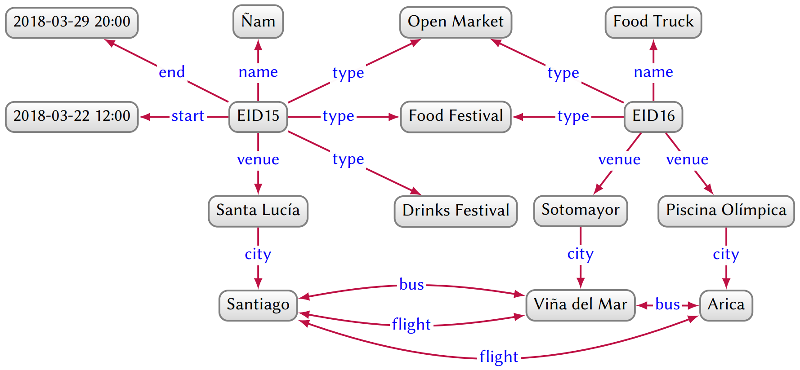
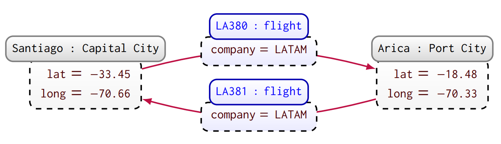
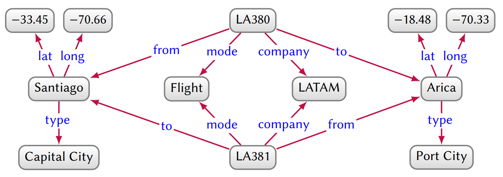
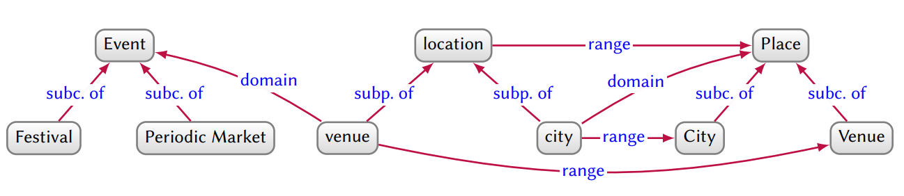
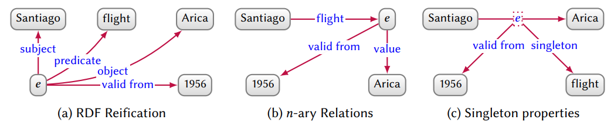
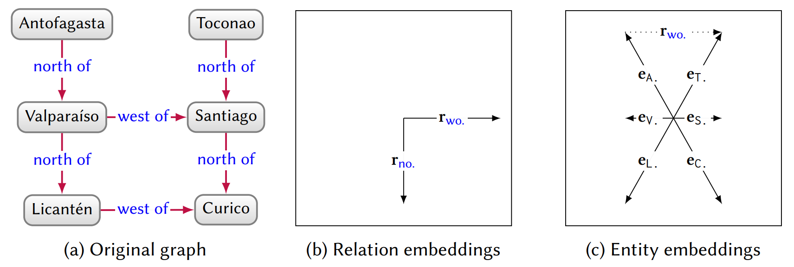
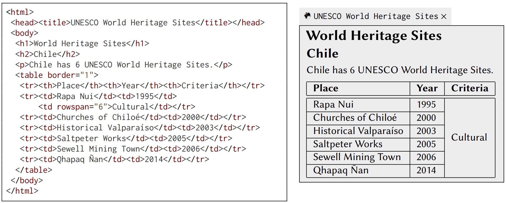
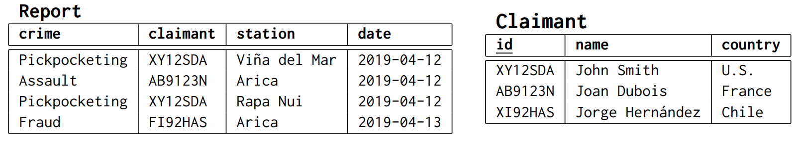
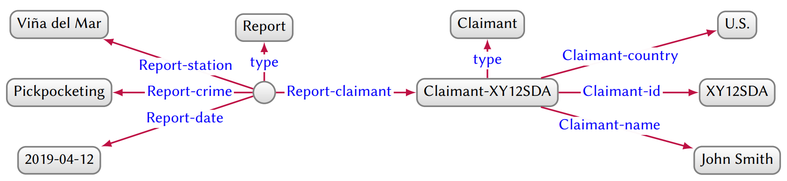

Knowledge Graphs
Based on: Aidan Hogan, et al. "Knowledge Graphs". In ACM Computing Surveys, 2021.
Definition
"a graph of data intended to accumulate and convey knowledge of the real world, whose nodes represent entities of interest and whose edges represent relations between these entities"
Open Knowledge Graphs
- published under the Open Data philosophy
- often under the Linked Data principles
- multiple domains, broad range of entities and relationships
- DBpedia
- YAGO
- Freebase
- Wikidata
Enterprise Knowledge Graphs
- Web search engines
- Commerce
- Social Networks
- Finance
- Google Knowledge Graph
- Amazon
- Uber
- LinkedIn
Directed edge-labelled graphs

Resource Description Framework (RDF)
- "subject–predicate–object" triples
- E.g., Bob knows John:
http://example.name#BobSmith12 http://xmlns.com/foaf/0.1/knows http://example.name#JohnDoe34.
Property graphs
- property–value pairs associated with both nodes and edges
- used in popular graph databases (e.g. Neo4j)
- can be translated to/from directed edge-labelled graphs

Translation from/to DEG

Querying
- Graph patterns
- Complex patterns, e.g., union, difference, etc.
- Navigational graph patterns, e.g. path expressions
Query Languages
- RDF graphs:
- Property graphs:
Schema, Identity, Context
Schema
- Vocabulary for reasoning
- Classes, class hierarchies
- Sub-properties, range and domain

Identity
Persistent Identifiers
- URLs:
- https://www.wikidata.org/wiki/Q2887
vs
- IRIs:
- http://www.wikidata.org/entity/Q2887
Identity
Existential Nodes
Context
Context on an edge in del graphs:

Graph Analytics
discovering and interpreting inherent patterns
- Centrality, e.g., degree, closeness, PageRank
- Community detection, e.g., minimum-cut
- Connectivity, e.g., density, k-connectivity, spanning trees
- Node similarity
- Path finding
Frameworks
- Apache Spark
- GraphLab
- Pregel
- Signal-Collect
Knowledge Graph Embeddings

Human Collaboration
- through collaborative-editing platforms
- prominent examples, e.g., Wikidata
- prone to disagreement, bias, vandalism, etc.
Text Sources
- Tokenisation, POS tagging, Word Sense Disambiguation
- Named Entity Recognition
- Entity Linking
- Relation Extraction
Markup Sources
HTML, Web tables, Wikitext (Wikipedia), TeX, Markdown

Structured Sources
Mapping from relational databases


Knowledge Graphs in Practice